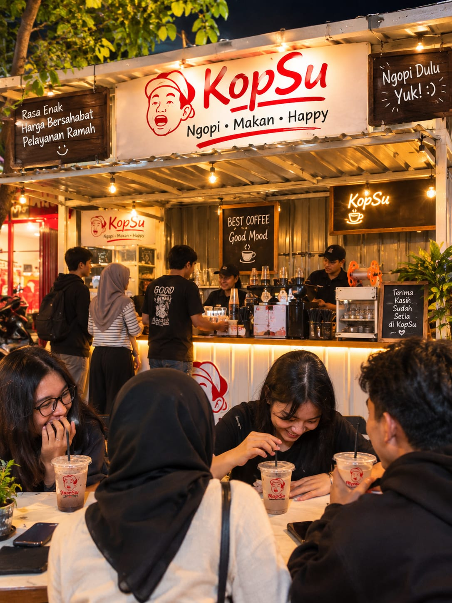
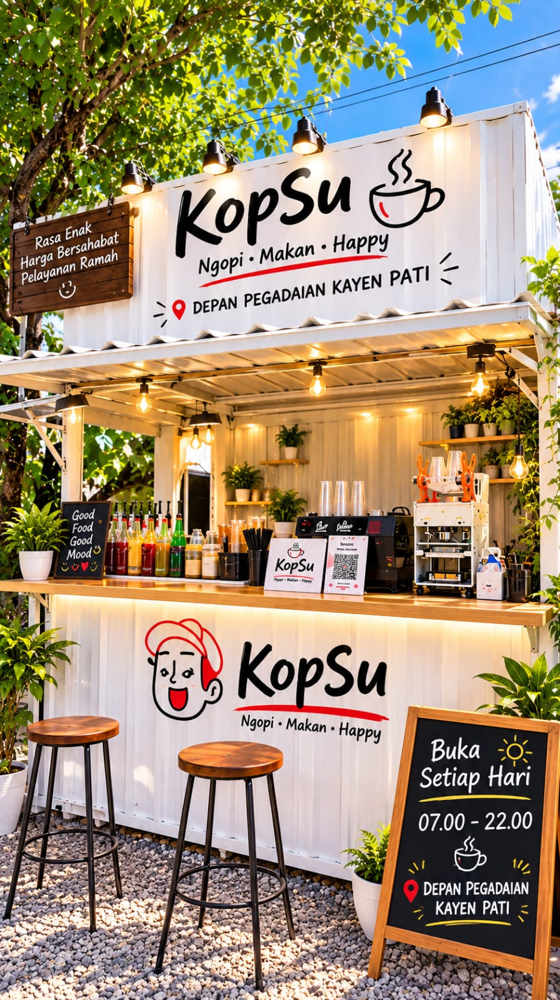
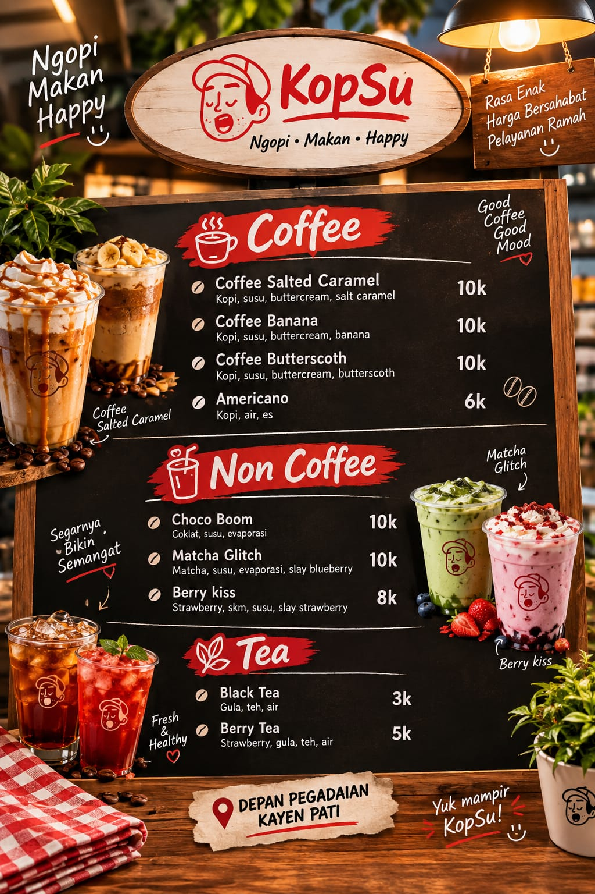
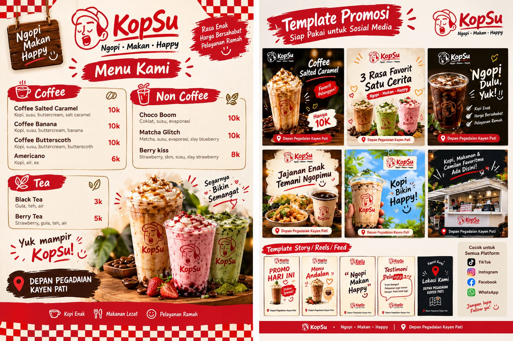
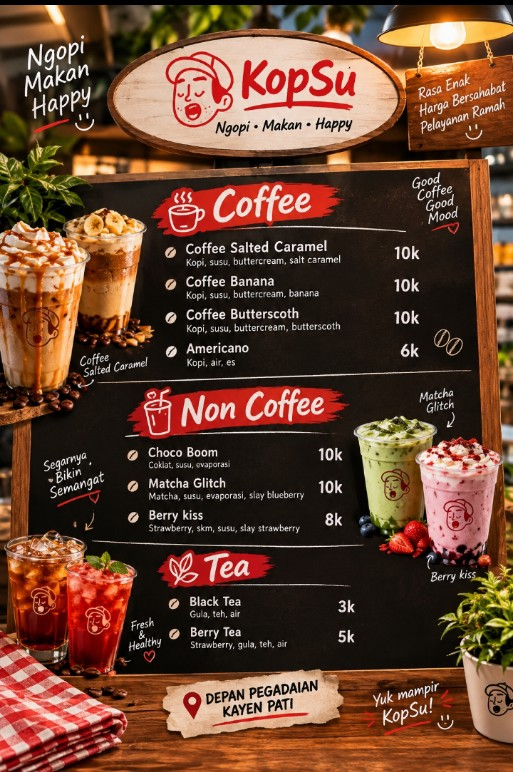

✦ KOPI LOKAL • KAYEN, PATI
Ngopi.
Makan.
Happy.
Temukan teman terbaik untuk harimu. Racikan kopi, minuman segar, dan camilan favorit dengan rasa yang bikin balik lagi.
09Pilihan minuman
07–22Buka setiap hari
KayenPati, Jawa Tengah

Rasa Enak, Harga BersahabatPelayanan ramah setiap hari
NGOPI
MAKAN
HAPPY ♥
MAKAN
HAPPY ♥
FAVORIT KAMU
Menu yang bikin
mood naik.
Dari kopi creamy sampai teh buah yang segar. Pilih teman santaimu hari ini.

TEMPAT CERITA BERTEMU
Good Coffee.
Good Food.
Good Mood.
Mampir bersama teman, keluarga, atau nikmati waktu sendiri. KOPSUPATI siap jadi tempat singgah favoritmu.
✦ Rasa enak dan harga bersahabat
✦ Pilihan kopi, non-coffee, dan tea
✦ Lokasi mudah ditemukan di Kayen
SUASANA KOPSUPATI
Hangat tempatnya,
seru ceritanya.



